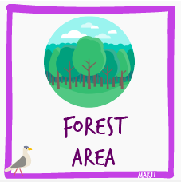
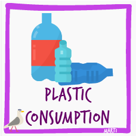

FIFA 18 Players
Top 100 Player's Name, Age, Country, Potential information
download
City e-bikes
Bu veri setinde, dört durak arasındaki bisiklet kullanımının süre verisi bulunmaktadır.
download

Forest Areas
Forest Area of Selected Countries Between 1990-2018
download
Research Budgets
Research Budgets of Selected Countries with GDP ratios.
download

Global Plastic Production
World-wide Total Global Plastic Production through the years
download